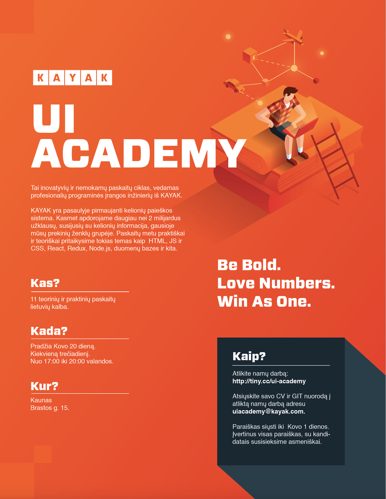

Registruokis į KAYAK UI ACADEMY!
Kada ?
Akademija vyks kiekvieną trečiadienį.
Pradžia kovo 20 dieną.
Paskaita truks nuo 17 iki 20 valandos.
Kokios paskaitos ?
A1 Introduction
KAYAK UI Academy ir KAYAK pristatymas
Susipažinimas su dėstytojais
Atidarymo šventė & networking
A2 HTML and CSS Introduction
Development įrankių ir aplinkos parengimas aplikacijos html, css kūrimuibr/>
Aplikacijos pradinės struktūros html kodasbr/>
Aplikacijos bazinių stilių sass, css kodasbr/>
Prisitaikančio dizaino įgyvendinimasbr/>
A3 Javascript Introduction
Javascript kalbos prigimtį, veikimo taisyklės, bei ECMASCRIPT 2015 standartas
Įvairios webApi kaip XHR, DOM Events, Window ir kitas
Vienetų testavimas
A4 React Introduction
React komponentų tipai
React Props & State
React lifecycle metodai
A5 Redux Introduction
Event-driven architektūra
Store, Reducers, Actions, Immutability
Redux connect
Time travelling & dev tools
A6 Advanced React & Redux
Performance optimizacija
React hooks
Redux middlewares
A7 Client Side Testing
Įvadas į e2e (end to end) testavimą
Geriausios praktikos
Testų rašymas su e2e testavimo platforma CYPRESS
A8 Backend: Node, Express, Server Side Rendering
Kodėl išpopuliarėjo Node?
Express praktiškai
Internetinio puslapio formavimas serveryje
A9 Backend: Mongo, SQL, API
Kuo skiriasi SQL ir NoSQL?
MongoDB praktiškai
Apgalvotų API kūrimas
A10 Deployment
Konteineriai
Nuolatinė integracija
Aplikacijos publikavimas nutolusiame serveryje
A11 Academy closing
Sertifikatų įteikimas
Akademijos uždarymo šventė
KAYAK UI Academy ir KAYAK pristatymas
Susipažinimas su dėstytojais
Atidarymo šventė & networking
A2 HTML and CSS Introduction
Development įrankių ir aplinkos parengimas aplikacijos html, css kūrimuibr/>
Aplikacijos pradinės struktūros html kodasbr/>
Aplikacijos bazinių stilių sass, css kodasbr/>
Prisitaikančio dizaino įgyvendinimasbr/>
A3 Javascript Introduction
Javascript kalbos prigimtį, veikimo taisyklės, bei ECMASCRIPT 2015 standartas
Įvairios webApi kaip XHR, DOM Events, Window ir kitas
Vienetų testavimas
A4 React Introduction
React komponentų tipai
React Props & State
React lifecycle metodai
A5 Redux Introduction
Event-driven architektūra
Store, Reducers, Actions, Immutability
Redux connect
Time travelling & dev tools
A6 Advanced React & Redux
Performance optimizacija
React hooks
Redux middlewares
A7 Client Side Testing
Įvadas į e2e (end to end) testavimą
Geriausios praktikos
Testų rašymas su e2e testavimo platforma CYPRESS
A8 Backend: Node, Express, Server Side Rendering
Kodėl išpopuliarėjo Node?
Express praktiškai
Internetinio puslapio formavimas serveryje
A9 Backend: Mongo, SQL, API
Kuo skiriasi SQL ir NoSQL?
MongoDB praktiškai
Apgalvotų API kūrimas
A10 Deployment
Konteineriai
Nuolatinė integracija
Aplikacijos publikavimas nutolusiame serveryje
A11 Academy closing
Sertifikatų įteikimas
Akademijos uždarymo šventė
Susidomėjote ?
Atlikite namų darbą: http://tiny.cc/ui-academy
Atsiųskite savo CV ir GIT nuorodą į atliktą namų darbą adresu: uiacademy@kayak.com.
Paraiškas siųsti iki Kovo 1 dienos.
Įvertinus visas paraiškas, su kandidatais susisieksime asmeniškai.
